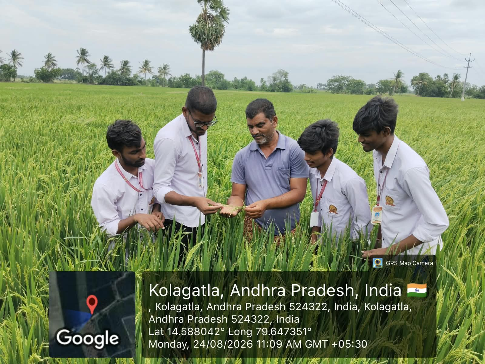
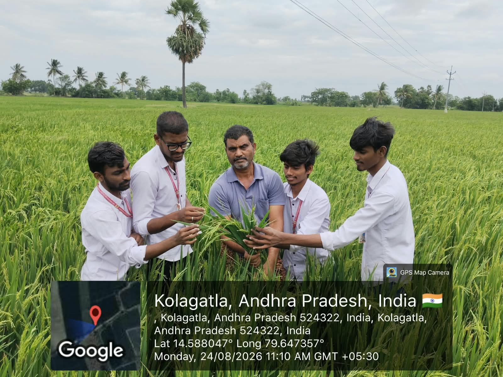
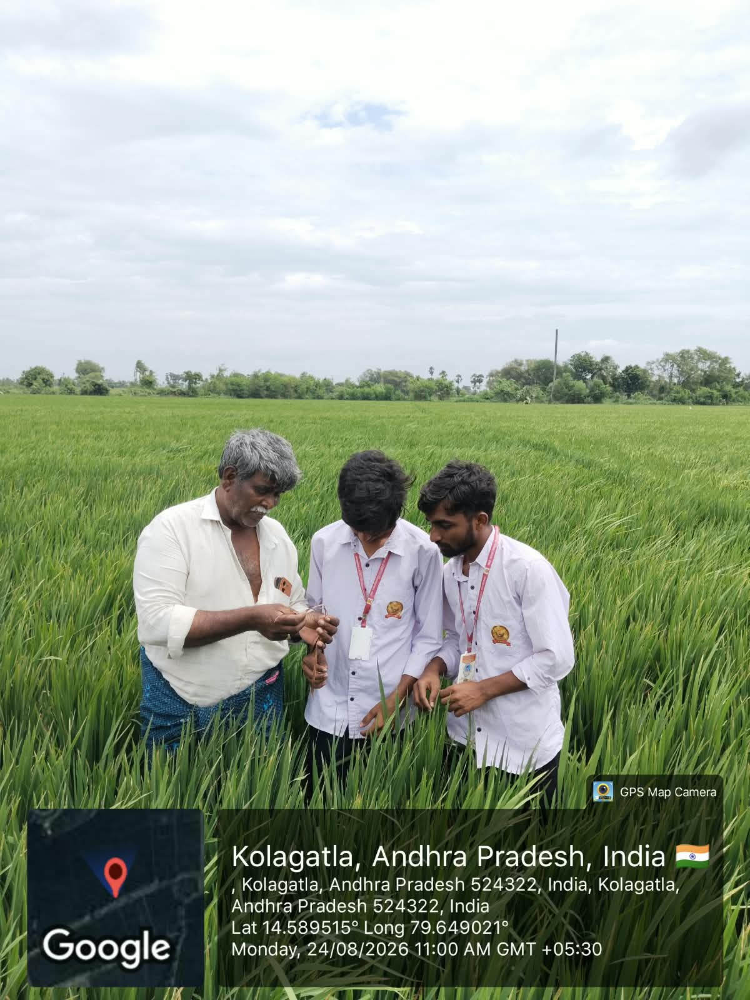
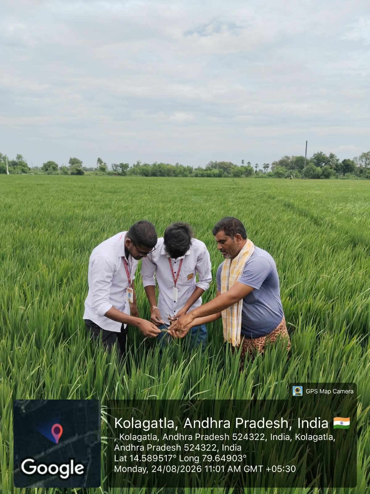
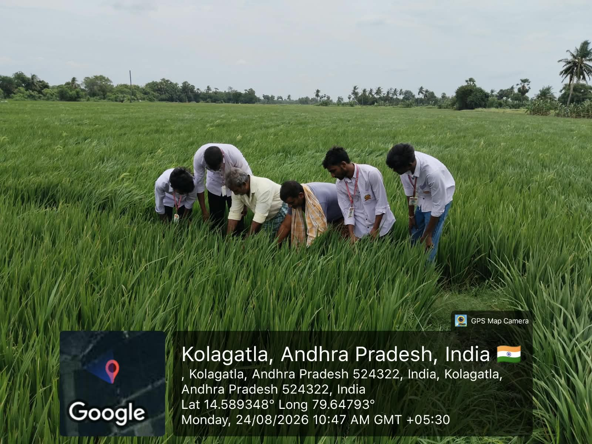

Community Service Project
Week 6 Report
Learning through crop inspection, farmer guidance and field-level observation.
| Day | Activity | Observations / Notes |
|---|---|---|
| Day 1 | Examined paddy plants with a farmer. | Observed the crop closely and discussed plant growth, panicle formation and field condition. |
| Day 2 | Studied crop samples in the field. | Compared leaves and panicles to understand how farmers identify healthy and weak plants. |
| Day 3 | Discussed crop problems and field care. | Learned from the farmer’s practical experience while checking the paddy plants. |
| Day 4 | Observed group field assessment. | Worked with farmers and team members to examine different portions of the crop and share observations. |
| Day 5 | Recorded learning for the project. | Organised photographs and notes showing how regular crop inspection supports organic paddy farming. |
Image Gallery




